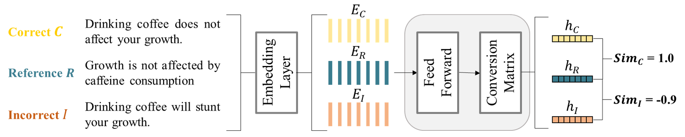
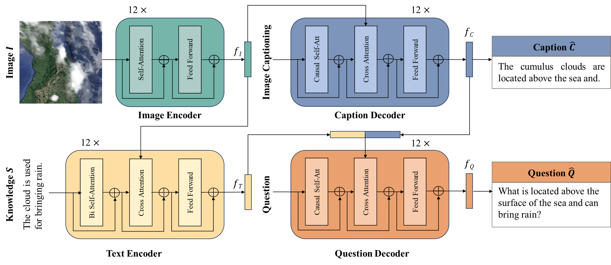
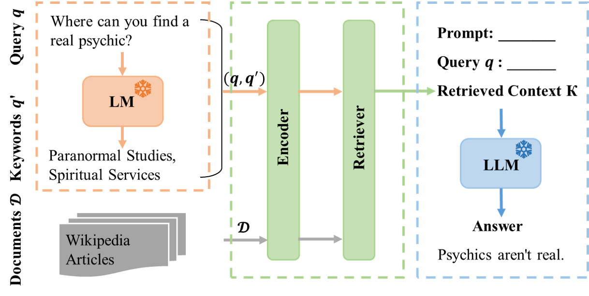
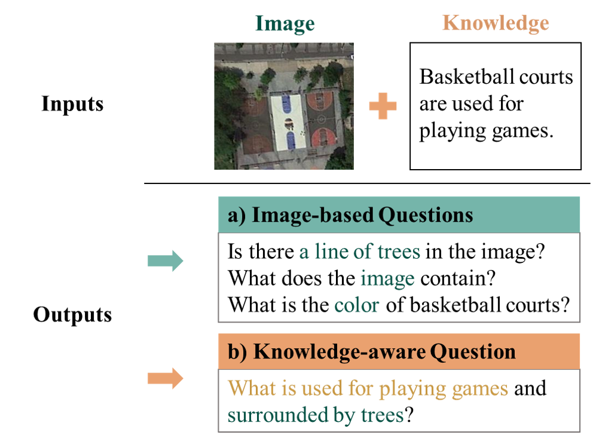

MATCHA: Matching Text via Contrastive Semantic Alignment
A semantic matching metric that rewards agreement with a reference while explicitly penalizing contradictions across diverse language-generation tasks.
I'm a PhD student at the International Max Planck Research School for Intelligent Systems (IMPRS-IS) and the University of Tübingen, supervised by Prof. Carsten Eickhoff, where I work on reliable and interpretable evaluation for generative AI, spanning factuality, natural language generation, multimodal reasoning, and retrieval-augmented generation. I earned my Master's at EPFL with a specialization in Data Science, and my Bachelor's at the Huazhong University of Science and Technology (HUST).
My hometown is in Inner Mongolia, China, a sunny region known for its sweet fruits and rich dairy products. Beyond research, I enjoy playing the piano, volleyball, skiing, and traveling.
Max Planck Institute & University of Tübingen, Germany.
École polytechnique fédérale de Lausanne (EPFL), Lausanne, Switzerland.
Huazhong University of Science and Technology (HUST), Wuhan, China.

A semantic matching metric that rewards agreement with a reference while explicitly penalizing contradictions across diverse language-generation tasks.

Integrates commonsense knowledge into visual question generation to produce richer, better-grounded questions for remote-sensing imagery.

A broad empirical study of RAG design choices, including model size, prompting, chunking, query expansion, multilingual retrieval, and sentence-level focus.

Incorporates external knowledge into visual question generation to produce more informative, knowledge-grounded questions for remote-sensing images.